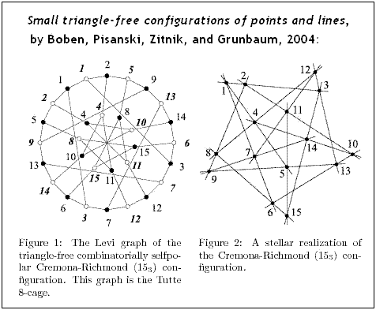
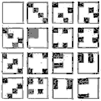
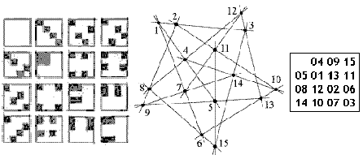

| Finite Geometry
Notes
|

Diamond Theory
shows that this structure
can also be modeled by an
inscape:

The illustration below shows how the
points and lines of the inscape may
be identified with those of the
Cremona-Richmond configuration.

Related material on inscapes:
Rosenhain and Göpel Tetrads in PG(3,2)
The
2-Subsets of a 6-Set are the Points of a PG(3,2)
A
Symplectic Approach to the Miracle Octad Generator
Inscapes, Inscapes II, Inscapes III, Inscapes IV